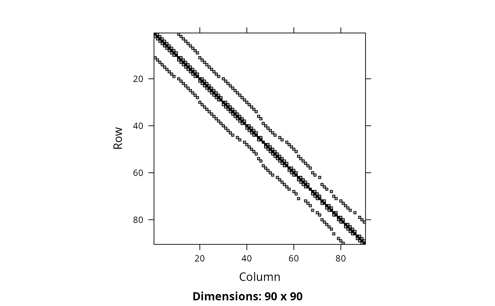
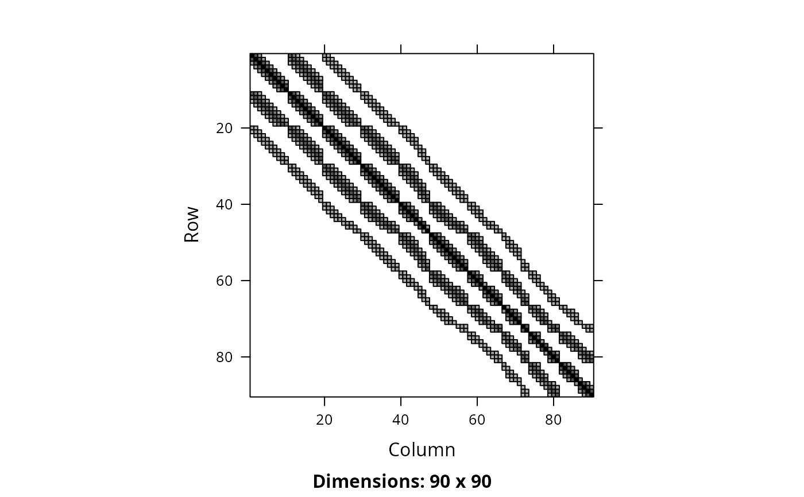
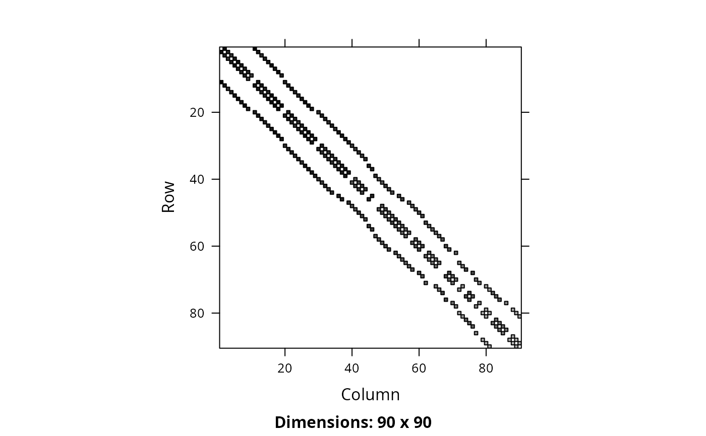

Add penalties to a conservation planning problem to favor
solutions that select planning units with high connectivity between them.
# S4 method for ConservationProblem,ANY,ANY,matrix add_connectivity_penalties(x, penalty, zones, data) # S4 method for ConservationProblem,ANY,ANY,Matrix add_connectivity_penalties(x, penalty, zones, data) # S4 method for ConservationProblem,ANY,ANY,dgCMatrix add_connectivity_penalties(x, penalty, zones, data) # S4 method for ConservationProblem,ANY,ANY,data.frame add_connectivity_penalties(x, penalty, zones, data) # S4 method for ConservationProblem,ANY,ANY,array add_connectivity_penalties(x, penalty, zones, data)
Arguments
| x |
|
|---|---|
| penalty |
|
| zones |
|
| data |
|
| ... | not used. |
Value
ConservationProblem-class object with the penalties
added to it.
Details
This function uses connectivity data to penalize solutions that have low connectivity. It can accommodate symmetric and asymmetric relationships between planning units. Although Marxan penalizes connections between planning units with high connectivity values, it is important to note that this function favors connections between planning units with high connectivity values. This function was inspired by Beger et al. (2010).
The argument to data can be specified in several different ways:
matrix,Matrixwhere rows and columns represent different planning units and the value of each cell represents the strength of connectivity between two different planning units. Cells that occur along the matrix diagonal are treated as weights which indicate that planning units are more desirable in the solution. The argument to
zonescan be used to control the strength of connectivity between planning units in different zones. The default argument forzonesis to treat planning units allocated to different zones as having zero connectivity.data.framecontaining the fields (columns)
"id1","id2", and"boundary". Here, each row denotes the connectivity between two planning units following the Marxan format. The data can be used to denote symmetric or asymmetric relationships between planning units. By default, input data is assumed to be symmetric unless asymmetric data is also included (e.g. if data is present for planning units 2 and 3, then the same amount of connectivity is expected for planning units 3 and 2, unless connectivity data is also provided for planning units 3 and 2). If the argument toxcontains multiple zones, then the columns"zone1"and"zone2"can optionally be provided to manually specify the connectivity values between planning units when they are allocated to specific zones. If the columns"zone1"and"zone2"are present, then the argument tozonesmust beNULL.arraycontaining four-dimensions where cell values indicate the strength of connectivity between planning units when they are assigned to specific management zones. The first two dimensions (i.e. rows and columns) indicate the strength of connectivity between different planning units and the second two dimensions indicate the different management zones. Thus the
data[1, 2, 3, 4]indicates the strength of connectivity between planning unit 1 and planning unit 2 when planning unit 1 is assigned to zone 3 and planning unit 2 is assigned to zone 4.
The connectivity penalties are calculated using the following equations.
Let \(I\) represent the set of planning units
(indexed by \(i\) or \(j\)), \(Z\) represent the set
of management zones (indexed by \(z\) or \(y\)), and \(X_{iz}\)
represent the decision variable for planning unit \(i\) for in zone
\(z\) (e.g. with binary
values one indicating if planning unit is allocated or not). Also, let
\(p\) represent the argument to penalty, \(D\) represent the
argument to data, and \(W\) represent the argument
to zones.
If the argument to data is supplied as a matrix or
Matrix object, then the penalties are calculated as:
$$ \sum_{i}^{I} \sum_{j}^{I} \sum_{z}^{Z} \sum_{y}^{Z} (-p \times X_{iz} \times X_{jy} \times D_{ij} \times W_{zy})$$
Otherwise, if the argument to data is supplied as a
data.frame or array object, then the penalties are
calculated as:
$$ \sum_{i}^{I} \sum_{j}^{I} \sum_{z}^{Z} \sum_{y}^{Z} (-p \times X_{iz} \times X_{jy} \times D_{ijzy})$$
Note that when the problem objective is to maximize some measure of benefit and not minimize some measure of cost, the term \(-p\) is replaced with \(p\).
References
Beger M, Linke S, Watts M, Game E, Treml E, Ball I, and Possingham, HP (2010) Incorporating asymmetric connectivity into spatial decision making for conservation, Conservation Letters, 3: 359--368.
See also
Examples
#># load data data(sim_pu_polygons, sim_pu_zones_stack, sim_features, sim_features_zones) # define function to rescale values between zero and one so that we # can compare solutions from different connectivity matrices rescale <- function(x, to = c(0, 1), from = range(x, na.rm = TRUE)) { (x - from[1]) / diff(from) * diff(to) + to[1] } # create basic problem p1 <- problem(sim_pu_polygons, sim_features, "cost") %>% add_min_set_objective() %>% add_relative_targets(0.2) # create a symmetric connectivity matrix where the connectivity between # two planning units corresponds to their shared boundary length b_matrix <- boundary_matrix(sim_pu_polygons) # standardize matrix values to lay between zero and one b_matrix[] <- rescale(b_matrix[]) # visualize connectivity matrix image(b_matrix)# create a symmetric connectivity matrix where the connectivity between # two planning units corresponds to their spatial proximity # i.e. planning units that are further apart share less connectivity centroids <- rgeos::gCentroid(sim_pu_polygons, byid = TRUE) d_matrix <- (1 / (as(dist(centroids@coords), "Matrix") + 1)) # standardize matrix values to lay between zero and one d_matrix[] <- rescale(d_matrix[]) # remove connections between planning units without connectivity to # reduce run-time d_matrix[d_matrix < 0.7] <- 0 # visualize connectivity matrix image(d_matrix)# create a symmetric connectivity matrix where the connectivity # between adjacent two planning units corresponds to their combined # value in a field in the planning unit attribute data # for example, this field could describe the extent of native vegetation in # each planning unit and we could use connectivity penalties to identify # solutions that cluster planning units together that both contain large # amounts of native vegetation c_matrix <- connectivity_matrix(sim_pu_polygons, "cost") # standardize matrix values to lay between zero and one c_matrix[] <- rescale(c_matrix[]) # visualize connectivity matrix image(c_matrix)# create an asymmetric connectivity matrix. Here, connectivity occurs between # adjacent planning units and, due to rivers flowing southwards # through the study area, connectivity from northern planning units to # southern planning units is ten times stronger than the reverse. ac_matrix <- matrix(0, length(sim_pu_polygons), length(sim_pu_polygons)) ac_matrix <- as(ac_matrix, "Matrix") adjacent_units <- rgeos::gIntersects(sim_pu_polygons, byid = TRUE) for (i in seq_len(length(sim_pu_polygons))) { for (j in seq_len(length(sim_pu_polygons))) { # find if planning units are adjacent if (adjacent_units[i, j]) { # find if planning units lay north and south of each other # i.e. they have the same x-coordinate if (centroids@coords[i, 1] == centroids@coords[j, 1]) { if (centroids@coords[i, 2] > centroids@coords[j, 2]) { # if i is north of j add 10 units of connectivity ac_matrix[i, j] <- ac_matrix[i, j] + 10 } else if (centroids@coords[i, 2] < centroids@coords[j, 2]) { # if i is south of j add 1 unit of connectivity ac_matrix[i, j] <- ac_matrix[i, j] + 1 } } } } } # standardize matrix values to lay between zero and one ac_matrix[] <- rescale(ac_matrix[]) # visualize asymmetric connectivity matrix image(ac_matrix)# create penalties penalties <- c(10, 25) # create problems using the different connectivity matrices and penalties p2 <- list(p1, p1 %>% add_connectivity_penalties(penalties[1], data = b_matrix), p1 %>% add_connectivity_penalties(penalties[2], data = b_matrix), p1 %>% add_connectivity_penalties(penalties[1], data = d_matrix), p1 %>% add_connectivity_penalties(penalties[2], data = d_matrix), p1 %>% add_connectivity_penalties(penalties[1], data = c_matrix), p1 %>% add_connectivity_penalties(penalties[2], data = c_matrix), p1 %>% add_connectivity_penalties(penalties[1], data = ac_matrix), p1 %>% add_connectivity_penalties(penalties[2], data = ac_matrix)) # assign names to the problems names(p2) <- c("basic problem", paste0("b_matrix (", penalties,")"), paste0("d_matrix (", penalties,")"), paste0("c_matrix (", penalties,")"), paste0("ac_matrix (", penalties,")"))#> Optimize a model with 5 rows, 90 columns and 450 nonzeros #> Variable types: 0 continuous, 90 integer (90 binary) #> Coefficient statistics: #> Matrix range [2e-01, 9e-01] #> Objective range [2e+02, 2e+02] #> Bounds range [1e+00, 1e+00] #> RHS range [5e+00, 2e+01] #> Found heuristic solution: objective 4527.5191308 #> Presolve time: 0.00s #> Presolved: 5 rows, 90 columns, 450 nonzeros #> Variable types: 0 continuous, 90 integer (90 binary) #> Presolved: 5 rows, 90 columns, 450 nonzeros #> #> #> Root relaxation: objective 3.540492e+03, 16 iterations, 0.00 seconds #> #> Nodes | Current Node | Objective Bounds | Work #> Expl Unexpl | Obj Depth IntInf | Incumbent BestBd Gap | It/Node Time #> #> 0 0 3540.49243 0 5 4527.51913 3540.49243 21.8% - 0s #> H 0 0 3620.4726332 3540.49243 2.21% - 0s #> #> Explored 1 nodes (16 simplex iterations) in 0.00 seconds #> Thread count was 1 (of 16 available processors) #> #> Solution count 2: 3620.47 4527.52 #> #> Optimal solution found (tolerance 1.00e-01) #> Best objective 3.620472633183e+03, best bound 3.540492425483e+03, gap 2.2091% #> Optimize a model with 573 rows, 374 columns and 1586 nonzeros #> Variable types: 0 continuous, 374 integer (374 binary) #> Coefficient statistics: #> Matrix range [2e-01, 1e+00] #> Objective range [3e+00, 2e+02] #> Bounds range [1e+00, 1e+00] #> RHS range [5e+00, 2e+01] #> Found heuristic solution: objective 17243.430551 #> Found heuristic solution: objective 4250.8524641 #> Presolve time: 0.00s #> Presolved: 573 rows, 374 columns, 1586 nonzeros #> Variable types: 0 continuous, 374 integer (374 binary) #> Presolved: 573 rows, 374 columns, 1586 nonzeros #> #> #> Root relaxation: objective 3.369993e+03, 186 iterations, 0.00 seconds #> #> Nodes | Current Node | Objective Bounds | Work #> Expl Unexpl | Obj Depth IntInf | Incumbent BestBd Gap | It/Node Time #> #> 0 0 3369.99340 0 189 4250.85246 3369.99340 20.7% - 0s #> H 0 0 3658.2724946 3369.99340 7.88% - 0s #> #> Explored 1 nodes (186 simplex iterations) in 0.01 seconds #> Thread count was 1 (of 16 available processors) #> #> Solution count 3: 3658.27 4250.85 17243.4 #> #> Optimal solution found (tolerance 1.00e-01) #> Best objective 3.658272494629e+03, best bound 3.369993398475e+03, gap 7.8802% #> Optimize a model with 573 rows, 374 columns and 1586 nonzeros #> Variable types: 0 continuous, 374 integer (374 binary) #> Coefficient statistics: #> Matrix range [2e-01, 1e+00] #> Objective range [8e+00, 2e+02] #> Bounds range [1e+00, 1e+00] #> RHS range [5e+00, 2e+01] #> Found heuristic solution: objective 15443.430551 #> Found heuristic solution: objective 3835.8524641 #> Presolve time: 0.00s #> Presolved: 573 rows, 374 columns, 1586 nonzeros #> Variable types: 0 continuous, 374 integer (374 binary) #> Presolved: 573 rows, 374 columns, 1586 nonzeros #> #> #> Root relaxation: objective 3.056743e+03, 180 iterations, 0.00 seconds #> #> Nodes | Current Node | Objective Bounds | Work #> Expl Unexpl | Obj Depth IntInf | Incumbent BestBd Gap | It/Node Time #> #> 0 0 3056.74323 0 277 3835.85246 3056.74323 20.3% - 0s #> H 0 0 3427.8493042 3056.74323 10.8% - 0s #> H 0 0 3414.0070574 3056.74323 10.5% - 0s #> 0 0 3061.46546 0 268 3414.00706 3061.46546 10.3% - 0s #> H 0 0 3403.0365583 3061.46546 10.0% - 0s #> 0 0 3064.71370 0 268 3403.03656 3064.71370 9.94% - 0s #> #> Cutting planes: #> Gomory: 2 #> #> Explored 1 nodes (256 simplex iterations) in 0.04 seconds #> Thread count was 1 (of 16 available processors) #> #> Solution count 5: 3403.04 3414.01 3427.85 ... 15443.4 #> #> Optimal solution found (tolerance 1.00e-01) #> Best objective 3.403036558254e+03, best bound 3.064713695614e+03, gap 9.9418% #> Optimize a model with 1601 rows, 888 columns and 3642 nonzeros #> Variable types: 0 continuous, 888 integer (888 binary) #> Coefficient statistics: #> Matrix range [2e-01, 1e+00] #> Objective range [7e+00, 2e+02] #> Bounds range [1e+00, 1e+00] #> RHS range [5e+00, 2e+01] #> Found heuristic solution: objective 11357.155983 #> Found heuristic solution: objective 3089.9015826 #> Presolve time: 0.01s #> Presolved: 1601 rows, 888 columns, 3642 nonzeros #> Variable types: 0 continuous, 888 integer (888 binary) #> Presolved: 1601 rows, 888 columns, 3642 nonzeros #> #> #> Root relaxation: objective 2.246545e+03, 575 iterations, 0.02 seconds #> #> Nodes | Current Node | Objective Bounds | Work #> Expl Unexpl | Obj Depth IntInf | Incumbent BestBd Gap | It/Node Time #> #> 0 0 2246.54497 0 769 3089.90158 2246.54497 27.3% - 0s #> 0 0 2251.84848 0 766 3089.90158 2251.84848 27.1% - 1s #> 0 0 2256.85307 0 764 3089.90158 2256.85307 27.0% - 1s #> 0 0 2256.85307 0 423 3089.90158 2256.85307 27.0% - 1s #> 0 0 2266.48310 0 407 3089.90158 2266.48310 26.6% - 2s #> 0 0 2269.15483 0 439 3089.90158 2269.15483 26.6% - 2s #> 0 0 2274.07806 0 418 3089.90158 2274.07806 26.4% - 2s #> 0 0 2276.08478 0 402 3089.90158 2276.08478 26.3% - 2s #> 0 0 2276.08478 0 402 3089.90158 2276.08478 26.3% - 2s #> H 0 0 2895.6926432 2276.08478 21.4% - 2s #> H 0 0 2826.6152019 2276.08478 19.5% - 2s #> H 0 0 2697.2913337 2276.08478 15.6% - 2s #> 0 2 2276.12852 0 402 2697.29133 2276.12852 15.6% - 2s #> H 82 49 2632.1849477 2317.46767 12.0% 36.2 2s #> H 141 80 2600.0067434 2320.15598 10.8% 42.8 2s #> H 249 160 2598.0925049 2334.29369 10.2% 46.8 2s #> H 263 171 2585.7086985 2334.29369 9.72% 45.3 2s #> #> Cutting planes: #> Gomory: 5 #> #> Explored 263 nodes (13140 simplex iterations) in 2.77 seconds #> Thread count was 1 (of 16 available processors) #> #> Solution count 9: 2585.71 2598.09 2600.01 ... 11357.2 #> #> Optimal solution found (tolerance 1.00e-01) #> Best objective 2.585708698524e+03, best bound 2.334293687452e+03, gap 9.7233% #> Optimize a model with 1601 rows, 888 columns and 3642 nonzeros #> Variable types: 0 continuous, 888 integer (888 binary) #> Coefficient statistics: #> Matrix range [2e-01, 1e+00] #> Objective range [2e+01, 2e+02] #> Bounds range [1e+00, 1e+00] #> RHS range [5e+00, 2e+01] #> Found heuristic solution: objective 727.7441298 #> Presolve time: 0.01s #> Presolved: 1601 rows, 888 columns, 3642 nonzeros #> Variable types: 0 continuous, 888 integer (888 binary) #> Presolved: 1601 rows, 888 columns, 3642 nonzeros #> #> #> Root relaxation: objective 6.507871e+01, 336 iterations, 0.01 seconds #> #> Nodes | Current Node | Objective Bounds | Work #> Expl Unexpl | Obj Depth IntInf | Incumbent BestBd Gap | It/Node Time #> #> 0 0 65.07871 0 691 727.74413 65.07871 91.1% - 0s #> H 0 0 240.1762586 65.07871 72.9% - 0s #> 0 0 79.02904 0 720 240.17626 79.02904 67.1% - 1s #> 0 0 85.00099 0 721 240.17626 85.00099 64.6% - 2s #> 0 0 85.00099 0 380 240.17626 85.00099 64.6% - 2s #> 0 0 99.81850 0 395 240.17626 99.81850 58.4% - 2s #> 0 0 101.77813 0 316 240.17626 101.77813 57.6% - 2s #> 0 0 117.33776 0 394 240.17626 117.33776 51.1% - 2s #> 0 0 117.33776 0 394 240.17626 117.33776 51.1% - 2s #> H 0 0 207.3857413 117.33776 43.4% - 2s #> 0 2 117.61773 0 394 207.38574 117.61773 43.3% - 2s #> #> Cutting planes: #> Gomory: 4 #> #> Explored 5 nodes (902 simplex iterations) in 2.56 seconds #> Thread count was 1 (of 16 available processors) #> #> Solution count 3: 207.386 240.176 727.744 #> #> Optimal solution found (tolerance 1.00e-01) #> Best objective 2.073857412612e+02, best bound 2.073857412612e+02, gap 0.0000% #> Optimize a model with 573 rows, 374 columns and 1586 nonzeros #> Variable types: 0 continuous, 374 integer (374 binary) #> Coefficient statistics: #> Matrix range [2e-01, 1e+00] #> Objective range [9e+00, 2e+02] #> Bounds range [1e+00, 1e+00] #> RHS range [5e+00, 2e+01] #> Found heuristic solution: objective 15732.432412 #> Found heuristic solution: objective 3921.8425648 #> Presolve time: 0.00s #> Presolved: 573 rows, 374 columns, 1586 nonzeros #> Variable types: 0 continuous, 374 integer (374 binary) #> Presolved: 573 rows, 374 columns, 1586 nonzeros #> #> #> Root relaxation: objective 3.073285e+03, 204 iterations, 0.00 seconds #> #> Nodes | Current Node | Objective Bounds | Work #> Expl Unexpl | Obj Depth IntInf | Incumbent BestBd Gap | It/Node Time #> #> 0 0 3073.28537 0 229 3921.84256 3073.28537 21.6% - 0s #> H 0 0 3325.2958505 3073.28537 7.58% - 0s #> #> Explored 1 nodes (204 simplex iterations) in 0.01 seconds #> Thread count was 1 (of 16 available processors) #> #> Solution count 3: 3325.3 3921.84 15732.4 #> #> Optimal solution found (tolerance 1.00e-01) #> Best objective 3.325295850535e+03, best bound 3.073285366407e+03, gap 7.5786% #> Optimize a model with 573 rows, 374 columns and 1586 nonzeros #> Variable types: 0 continuous, 374 integer (374 binary) #> Coefficient statistics: #> Matrix range [2e-01, 1e+00] #> Objective range [2e+01, 2e+02] #> Bounds range [1e+00, 1e+00] #> RHS range [5e+00, 2e+01] #> Found heuristic solution: objective 11665.935203 #> Found heuristic solution: objective 3013.3277158 #> Presolve time: 0.00s #> Presolved: 573 rows, 374 columns, 1586 nonzeros #> Variable types: 0 continuous, 374 integer (374 binary) #> Presolved: 573 rows, 374 columns, 1586 nonzeros #> #> #> Root relaxation: objective 2.266910e+03, 203 iterations, 0.00 seconds #> #> Nodes | Current Node | Objective Bounds | Work #> Expl Unexpl | Obj Depth IntInf | Incumbent BestBd Gap | It/Node Time #> #> 0 0 2266.91049 0 305 3013.32772 2266.91049 24.8% - 0s #> 0 0 2282.69855 0 300 3013.32772 2282.69855 24.2% - 0s #> 0 0 2288.65036 0 308 3013.32772 2288.65036 24.0% - 0s #> 0 0 2293.07838 0 299 3013.32772 2293.07838 23.9% - 0s #> 0 0 2293.07838 0 188 3013.32772 2293.07838 23.9% - 0s #> 0 0 2293.07838 0 181 3013.32772 2293.07838 23.9% - 0s #> 0 0 2293.76252 0 173 3013.32772 2293.76252 23.9% - 0s #> 0 0 2295.93363 0 179 3013.32772 2295.93363 23.8% - 0s #> 0 0 2295.98028 0 170 3013.32772 2295.98028 23.8% - 0s #> 0 0 2295.98028 0 170 3013.32772 2295.98028 23.8% - 0s #> H 0 0 2656.0343037 2295.98028 13.6% - 0s #> H 0 0 2547.6464942 2295.98028 9.88% - 0s #> #> Cutting planes: #> Gomory: 3 #> MIR: 1 #> #> Explored 1 nodes (568 simplex iterations) in 0.14 seconds #> Thread count was 1 (of 16 available processors) #> #> Solution count 4: 2547.65 2656.03 3013.33 11665.9 #> #> Optimal solution found (tolerance 1.00e-01) #> Best objective 2.547646494206e+03, best bound 2.295980283209e+03, gap 9.8784% #> Optimize a model with 285 rows, 230 columns and 1010 nonzeros #> Variable types: 0 continuous, 230 integer (230 binary) #> Coefficient statistics: #> Matrix range [2e-01, 1e+00] #> Objective range [1e+00, 2e+02] #> Bounds range [1e+00, 1e+00] #> RHS range [5e+00, 2e+01] #> Found heuristic solution: objective 17036.145073 #> Found heuristic solution: objective 4384.5191308 #> Presolve time: 0.00s #> Presolved: 285 rows, 230 columns, 1010 nonzeros #> Variable types: 0 continuous, 230 integer (230 binary) #> Presolved: 285 rows, 230 columns, 1010 nonzeros #> #> #> Root relaxation: objective 3.411779e+03, 105 iterations, 0.00 seconds #> #> Nodes | Current Node | Objective Bounds | Work #> Expl Unexpl | Obj Depth IntInf | Incumbent BestBd Gap | It/Node Time #> #> 0 0 3411.77947 0 36 4384.51913 3411.77947 22.2% - 0s #> H 0 0 3519.2934550 3411.77947 3.05% - 0s #> #> Explored 1 nodes (105 simplex iterations) in 0.00 seconds #> Thread count was 1 (of 16 available processors) #> #> Solution count 3: 3519.29 4384.52 17036.1 #> #> Optimal solution found (tolerance 1.00e-01) #> Best objective 3.519293455034e+03, best bound 3.411779468115e+03, gap 3.0550% #> Optimize a model with 285 rows, 230 columns and 1010 nonzeros #> Variable types: 0 continuous, 230 integer (230 binary) #> Coefficient statistics: #> Matrix range [2e-01, 1e+00] #> Objective range [2e+00, 2e+02] #> Bounds range [1e+00, 1e+00] #> RHS range [5e+00, 2e+01] #> Found heuristic solution: objective 15881.145073 #> Found heuristic solution: objective 4170.0191308 #> Presolve time: 0.00s #> Presolved: 285 rows, 230 columns, 1010 nonzeros #> Variable types: 0 continuous, 230 integer (230 binary) #> Presolved: 285 rows, 230 columns, 1010 nonzeros #> #> #> Root relaxation: objective 3.175716e+03, 112 iterations, 0.00 seconds #> #> Nodes | Current Node | Objective Bounds | Work #> Expl Unexpl | Obj Depth IntInf | Incumbent BestBd Gap | It/Node Time #> #> 0 0 3175.71641 0 35 4170.01913 3175.71641 23.8% - 0s #> H 0 0 3251.1145197 3175.71641 2.32% - 0s #> #> Explored 1 nodes (112 simplex iterations) in 0.00 seconds #> Thread count was 1 (of 16 available processors) #> #> Solution count 3: 3251.11 4170.02 15881.1 #> #> Optimal solution found (tolerance 1.00e-01) #> Best objective 3.251114519707e+03, best bound 3.175716408952e+03, gap 2.3191%# plot solutions par(mfrow = c(3, 3)) for (i in seq_along(s2)) { plot(s2[[i]], main = names(p2)[i], cex = 1.5, col = "white") plot(s2[[i]][s2[[i]]$solution_1 == 1, ], col = "darkgreen", add = TRUE) }# create minimal multi-zone problem and limit solver to one minute # to obtain solutions in a short period of time p3 <- problem(sim_pu_zones_stack, sim_features_zones) %>% add_min_set_objective() %>% add_relative_targets(matrix(0.15, nrow = 5, ncol = 3)) %>% add_binary_decisions() %>% add_default_solver(time_limit = 60) # create matrix showing which planning units are adjacent to other units a_matrix <- connected_matrix(sim_pu_zones_stack) # visualize matrix image(a_matrix)# create a zone matrix where connectivities are only present between # planning units that are allocated to the same zone zm1 <- as(diag(3), "Matrix") # print zone matrix print(zm1)#> [,1] [,2] [,3] #> [1,] 1 . . #> [2,] . 1 . #> [3,] . . 1# create a zone matrix where connectivities are strongest between # planning units allocated to different zones zm2 <- matrix(1, ncol = 3, nrow = 3) diag(zm2) <- 0 zm2 <- as(zm2, "Matrix") # print zone matrix print(zm2)#> 3 x 3 Matrix of class "dsyMatrix" #> [,1] [,2] [,3] #> [1,] 0 1 1 #> [2,] 1 0 1 #> [3,] 1 1 0# create a zone matrix that indicates that connectivities between planning # units assigned to the same zone are much higher than connectivities # assigned to different zones zm3 <- matrix(0.1, ncol = 3, nrow = 3) diag(zm3) <- 1 zm3 <- as(zm3, "Matrix") # print zone matrix print(zm3)#> 3 x 3 Matrix of class "dsyMatrix" #> [,1] [,2] [,3] #> [1,] 1.0 0.1 0.1 #> [2,] 0.1 1.0 0.1 #> [3,] 0.1 0.1 1.0# create a zone matrix that indicates that connectivities between planning # units allocated to zone 1 are very high, connectivities between planning # units allocated to zones 1 and 2 are moderately high, and connectivities # planning units allocated to other zones are low zm4 <- matrix(0.1, ncol = 3, nrow = 3) zm4[1, 1] <- 1 zm4[1, 2] <- 0.5 zm4[2, 1] <- 0.5 zm4 <- as(zm4, "Matrix") # print zone matrix print(zm4)#> 3 x 3 Matrix of class "dsyMatrix" #> [,1] [,2] [,3] #> [1,] 1.0 0.5 0.1 #> [2,] 0.5 0.1 0.1 #> [3,] 0.1 0.1 0.1# create a zone matrix with strong connectivities between planning units # allocated to the same zone, moderate connectivities between planning # unit allocated to zone 1 and zone 2, and negative connectivities between # planning units allocated to zone 3 and the other two zones zm5 <- matrix(-1, ncol = 3, nrow = 3) zm5[1, 2] <- 0.5 zm5[2, 1] <- 0.5 diag(zm5) <- 1 zm5 <- as(zm5, "Matrix") # print zone matrix print(zm5)#> 3 x 3 Matrix of class "dsyMatrix" #> [,1] [,2] [,3] #> [1,] 1.0 0.5 -1 #> [2,] 0.5 1.0 -1 #> [3,] -1.0 -1.0 1# create vector of penalties to use creating problems penalties2 <- c(5, 30) # create multi-zone problems using the adjacent connectivity matrix and # different zone matrices p4 <- list( p3, p3 %>% add_connectivity_penalties(penalties2[1], zm1, a_matrix), p3 %>% add_connectivity_penalties(penalties2[2], zm1, a_matrix), p3 %>% add_connectivity_penalties(penalties2[1], zm2, a_matrix), p3 %>% add_connectivity_penalties(penalties2[2], zm2, a_matrix), p3 %>% add_connectivity_penalties(penalties2[1], zm3, a_matrix), p3 %>% add_connectivity_penalties(penalties2[2], zm3, a_matrix), p3 %>% add_connectivity_penalties(penalties2[1], zm4, a_matrix), p3 %>% add_connectivity_penalties(penalties2[2], zm4, a_matrix), p3 %>% add_connectivity_penalties(penalties2[1], zm5, a_matrix), p3 %>% add_connectivity_penalties(penalties2[2], zm5, a_matrix)) # assign names to the problems names(p4) <- c("basic problem", paste0("zm", rep(seq_len(5), each = 2), " (", rep(penalties2, 2), ")"))#> Optimize a model with 105 rows, 270 columns and 1620 nonzeros #> Variable types: 0 continuous, 270 integer (270 binary) #> Coefficient statistics: #> Matrix range [2e-01, 1e+00] #> Objective range [2e+02, 2e+02] #> Bounds range [1e+00, 1e+00] #> RHS range [1e+00, 1e+01] #> Found heuristic solution: objective 9508.9296896 #> Presolve time: 0.00s #> Presolved: 105 rows, 270 columns, 1620 nonzeros #> Variable types: 0 continuous, 270 integer (270 binary) #> Presolved: 105 rows, 270 columns, 1620 nonzeros #> #> #> Root relaxation: objective 8.768937e+03, 112 iterations, 0.00 seconds #> #> Nodes | Current Node | Objective Bounds | Work #> Expl Unexpl | Obj Depth IntInf | Incumbent BestBd Gap | It/Node Time #> #> 0 0 8768.93691 0 19 9508.92969 8768.93691 7.78% - 0s #> #> Explored 1 nodes (112 simplex iterations) in 0.00 seconds #> Thread count was 1 (of 16 available processors) #> #> Solution count 1: 9508.93 #> #> Optimal solution found (tolerance 1.00e-01) #> Best objective 9.508929689580e+03, best bound 8.768936912659e+03, gap 7.7821% #> Optimize a model with 1809 rows, 1122 columns and 5028 nonzeros #> Variable types: 0 continuous, 1122 integer (1122 binary) #> Coefficient statistics: #> Matrix range [2e-01, 1e+00] #> Objective range [5e+00, 2e+02] #> Bounds range [1e+00, 1e+00] #> RHS range [1e+00, 1e+01] #> Found heuristic solution: objective 9408.9296896 #> Presolve time: 0.02s #> Presolved: 1809 rows, 1122 columns, 5028 nonzeros #> Variable types: 0 continuous, 1122 integer (1122 binary) #> Presolved: 1809 rows, 1122 columns, 5028 nonzeros #> #> #> Root relaxation: objective 8.173221e+03, 666 iterations, 0.02 seconds #> #> Nodes | Current Node | Objective Bounds | Work #> Expl Unexpl | Obj Depth IntInf | Incumbent BestBd Gap | It/Node Time #> #> 0 0 8173.22147 0 627 9408.92969 8173.22147 13.1% - 0s #> H 0 0 8923.4060635 8173.22147 8.41% - 0s #> #> Explored 1 nodes (666 simplex iterations) in 0.06 seconds #> Thread count was 1 (of 16 available processors) #> #> Solution count 2: 8923.41 9408.93 #> #> Optimal solution found (tolerance 1.00e-01) #> Best objective 8.923406063526e+03, best bound 8.173221467788e+03, gap 8.4069% #> Optimize a model with 1809 rows, 1122 columns and 5028 nonzeros #> Variable types: 0 continuous, 1122 integer (1122 binary) #> Coefficient statistics: #> Matrix range [2e-01, 1e+00] #> Objective range [3e+01, 2e+02] #> Bounds range [1e+00, 1e+00] #> RHS range [1e+00, 1e+01] #> Found heuristic solution: objective 8908.9296896 #> Presolve time: 0.02s #> Presolved: 1809 rows, 1122 columns, 5028 nonzeros #> Variable types: 0 continuous, 1122 integer (1122 binary) #> Presolved: 1809 rows, 1122 columns, 5028 nonzeros #> #> #> Root relaxation: objective 4.666460e+03, 705 iterations, 0.03 seconds #> #> Nodes | Current Node | Objective Bounds | Work #> Expl Unexpl | Obj Depth IntInf | Incumbent BestBd Gap | It/Node Time #> #> 0 0 4666.45996 0 866 8908.92969 4666.45996 47.6% - 0s #> H 0 0 8052.4037767 4666.45996 42.0% - 0s #> 0 0 4704.18914 0 880 8052.40378 4704.18914 41.6% - 0s #> H 0 0 7795.8064641 4704.18914 39.7% - 0s #> 0 0 4717.66800 0 881 7795.80646 4717.66800 39.5% - 0s #> 0 0 4759.47601 0 808 7795.80646 4759.47601 38.9% - 0s #> H 0 0 7604.7691153 4759.47601 37.4% - 0s #> 0 0 4759.47601 0 534 7604.76912 4759.47601 37.4% - 0s #> H 0 0 7532.8024868 4759.47601 36.8% - 0s #> 0 0 4790.57026 0 522 7532.80249 4790.57026 36.4% - 0s #> 0 0 4827.76449 0 490 7532.80249 4827.76449 35.9% - 0s #> 0 0 4835.43471 0 496 7532.80249 4835.43471 35.8% - 0s #> 0 0 4837.44303 0 503 7532.80249 4837.44303 35.8% - 0s #> 0 0 4861.42941 0 494 7532.80249 4861.42941 35.5% - 0s #> 0 0 4861.42941 0 494 7532.80249 4861.42941 35.5% - 0s #> H 0 0 6605.7328431 4861.42941 26.4% - 0s #> H 0 0 6429.6609947 4861.42941 24.4% - 0s #> 0 2 4862.76523 0 494 6429.66099 4862.76523 24.4% - 0s #> H 27 27 6247.6420401 4935.20873 21.0% 55.6 0s #> H 118 118 5932.5811219 4935.20873 16.8% 29.9 0s #> H 432 195 5648.0822512 4956.26194 12.2% 20.3 0s #> H 486 218 5609.9074263 4966.31162 11.5% 22.6 1s #> H 533 245 5598.7515660 4966.31162 11.3% 21.0 2s #> #> Cutting planes: #> Gomory: 19 #> Cover: 3 #> Zero half: 9 #> #> Explored 1245 nodes (56380 simplex iterations) in 4.84 seconds #> Thread count was 1 (of 16 available processors) #> #> Solution count 10: 5598.75 5609.91 5648.08 ... 7795.81 #> #> Optimal solution found (tolerance 1.00e-01) #> Best objective 5.598751566041e+03, best bound 5.040059505022e+03, gap 9.9789% #> Optimize a model with 3513 rows, 1974 columns and 8436 nonzeros #> Variable types: 0 continuous, 1974 integer (1974 binary) #> Coefficient statistics: #> Matrix range [2e-01, 1e+00] #> Objective range [5e+00, 2e+02] #> Bounds range [1e+00, 1e+00] #> RHS range [1e+00, 1e+01] #> Found heuristic solution: objective 9198.9296896 #> Presolve time: 0.04s #> Presolved: 3513 rows, 1974 columns, 11844 nonzeros #> Variable types: 0 continuous, 1974 integer (1974 binary) #> Presolve removed 852 rows and 0 columns #> Presolved: 2661 rows, 1974 columns, 9288 nonzeros #> #> #> Root relaxation: objective 8.139578e+03, 2229 iterations, 0.10 seconds #> #> Nodes | Current Node | Objective Bounds | Work #> Expl Unexpl | Obj Depth IntInf | Incumbent BestBd Gap | It/Node Time #> #> 0 0 8139.57774 0 477 9198.92969 8139.57774 11.5% - 0s #> H 0 0 8621.7601293 8139.57774 5.59% - 0s #> #> Explored 1 nodes (2652 simplex iterations) in 0.17 seconds #> Thread count was 1 (of 16 available processors) #> #> Solution count 2: 8621.76 9198.93 #> #> Optimal solution found (tolerance 1.00e-01) #> Best objective 8.621760129342e+03, best bound 8.139577742652e+03, gap 5.5926% #> Optimize a model with 3513 rows, 1974 columns and 8436 nonzeros #> Variable types: 0 continuous, 1974 integer (1974 binary) #> Coefficient statistics: #> Matrix range [2e-01, 1e+00] #> Objective range [3e+01, 2e+02] #> Bounds range [1e+00, 1e+00] #> RHS range [1e+00, 1e+01] #> Found heuristic solution: objective 7648.9296896 #> Presolve time: 0.04s #> Presolved: 3513 rows, 1974 columns, 11844 nonzeros #> Variable types: 0 continuous, 1974 integer (1974 binary) #> Presolve removed 852 rows and 0 columns #> Presolved: 2661 rows, 1974 columns, 9288 nonzeros #> #> #> Root relaxation: objective 4.616137e+03, 2614 iterations, 0.13 seconds #> #> Nodes | Current Node | Objective Bounds | Work #> Expl Unexpl | Obj Depth IntInf | Incumbent BestBd Gap | It/Node Time #> #> 0 0 4616.13731 0 588 7648.92969 4616.13731 39.6% - 0s #> H 0 0 6859.4202595 4616.13731 32.7% - 0s #> H 0 0 6333.0709122 4616.13731 27.1% - 0s #> H 0 0 5422.5098791 4616.13731 14.9% - 0s #> 0 0 4632.07483 0 651 5422.50988 4632.07483 14.6% - 0s #> 0 0 4632.26352 0 665 5422.50988 4632.26352 14.6% - 0s #> 0 0 4632.75129 0 706 5422.50988 4632.75129 14.6% - 0s #> 0 0 4632.83380 0 703 5422.50988 4632.83380 14.6% - 0s #> 0 0 4632.83380 0 703 5422.50988 4632.83380 14.6% - 0s #> H 0 0 4977.5526456 4632.83380 6.93% - 0s #> #> Cutting planes: #> Gomory: 3 #> Cover: 2 #> Zero half: 6 #> #> Explored 1 nodes (4367 simplex iterations) in 0.75 seconds #> Thread count was 1 (of 16 available processors) #> #> Solution count 5: 4977.55 5422.51 6333.07 ... 7648.93 #> #> Optimal solution found (tolerance 1.00e-01) #> Best objective 4.977552645643e+03, best bound 4.632833801954e+03, gap 6.9255% #> Optimize a model with 5217 rows, 2826 columns and 11844 nonzeros #> Variable types: 0 continuous, 2826 integer (2826 binary) #> Coefficient statistics: #> Matrix range [2e-01, 1e+00] #> Objective range [5e-01, 2e+02] #> Bounds range [1e+00, 1e+00] #> RHS range [1e+00, 1e+01] #> Found heuristic solution: objective 9377.9296896 #> Presolve time: 0.08s #> Presolved: 5217 rows, 2826 columns, 16956 nonzeros #> Variable types: 0 continuous, 2826 integer (2826 binary) #> Presolve removed 852 rows and 0 columns #> Presolved: 4365 rows, 2826 columns, 14400 nonzeros #> #> #> Root relaxation: objective 8.129420e+03, 2359 iterations, 0.16 seconds #> #> Nodes | Current Node | Objective Bounds | Work #> Expl Unexpl | Obj Depth IntInf | Incumbent BestBd Gap | It/Node Time #> #> 0 0 8129.42001 0 998 9377.92969 8129.42001 13.3% - 0s #> H 0 0 8767.4425657 8129.42001 7.28% - 0s #> #> Explored 1 nodes (2550 simplex iterations) in 0.36 seconds #> Thread count was 1 (of 16 available processors) #> #> Solution count 2: 8767.44 9377.93 #> #> Optimal solution found (tolerance 1.00e-01) #> Best objective 8.767442565665e+03, best bound 8.129420005422e+03, gap 7.2772% #> Optimize a model with 5217 rows, 2826 columns and 11844 nonzeros #> Variable types: 0 continuous, 2826 integer (2826 binary) #> Coefficient statistics: #> Matrix range [2e-01, 1e+00] #> Objective range [3e+00, 2e+02] #> Bounds range [1e+00, 1e+00] #> RHS range [1e+00, 1e+01] #> Found heuristic solution: objective 8722.9296896 #> Presolve time: 0.08s #> Presolved: 5217 rows, 2826 columns, 16956 nonzeros #> Variable types: 0 continuous, 2826 integer (2826 binary) #> Presolve removed 852 rows and 0 columns #> Presolved: 4365 rows, 2826 columns, 14400 nonzeros #> #> #> Root relaxation: objective 4.381829e+03, 2443 iterations, 0.15 seconds #> #> Nodes | Current Node | Objective Bounds | Work #> Expl Unexpl | Obj Depth IntInf | Incumbent BestBd Gap | It/Node Time #> #> 0 0 4381.82896 0 1334 8722.92969 4381.82896 49.8% - 0s #> H 0 0 8563.3386749 4381.82896 48.8% - 0s #> H 0 0 7388.7333194 4381.82896 40.7% - 0s #> 0 0 4411.15151 0 1372 7388.73332 4411.15151 40.3% - 0s #> 0 0 4417.46873 0 1339 7388.73332 4417.46873 40.2% - 0s #> 0 0 4418.27818 0 1338 7388.73332 4418.27818 40.2% - 0s #> 0 0 4419.05240 0 1342 7388.73332 4419.05240 40.2% - 0s #> 0 0 4419.47391 0 1336 7388.73332 4419.47391 40.2% - 0s #> 0 0 4419.53565 0 1336 7388.73332 4419.53565 40.2% - 0s #> 0 0 4419.59739 0 1336 7388.73332 4419.59739 40.2% - 0s #> 0 0 4419.59739 0 1339 7388.73332 4419.59739 40.2% - 0s #> 0 0 4425.12173 0 1331 7388.73332 4425.12173 40.1% - 0s #> 0 0 4425.59771 0 1331 7388.73332 4425.59771 40.1% - 0s #> 0 0 4426.40716 0 1330 7388.73332 4426.40716 40.1% - 1s #> 0 0 4427.21661 0 1329 7388.73332 4427.21661 40.1% - 1s #> 0 0 4428.02606 0 1328 7388.73332 4428.02606 40.1% - 1s #> 0 0 4428.83550 0 1327 7388.73332 4428.83550 40.1% - 1s #> 0 0 4429.40875 0 1332 7388.73332 4429.40875 40.1% - 1s #> 0 0 4432.20819 0 1359 7388.73332 4432.20819 40.0% - 1s #> 0 0 4432.22416 0 1359 7388.73332 4432.22416 40.0% - 1s #> 0 0 4432.22416 0 1359 7388.73332 4432.22416 40.0% - 2s #> H 0 0 6244.0156197 4432.22416 29.0% - 3s #> 0 0 4647.33455 0 876 6244.01562 4647.33455 25.6% - 3s #> H 0 0 5964.5994323 4647.33455 22.1% - 3s #> 0 0 4719.54251 0 848 5964.59943 4719.54251 20.9% - 3s #> 0 0 4728.71646 0 787 5964.59943 4728.71646 20.7% - 3s #> 0 0 4729.42866 0 796 5964.59943 4729.42866 20.7% - 4s #> 0 0 4729.42866 0 794 5964.59943 4729.42866 20.7% - 4s #> 0 2 4729.45439 0 794 5964.59943 4729.45439 20.7% - 4s #> 25 27 5018.39322 14 684 5964.59943 4828.66477 19.0% 159 5s #> H 301 251 5901.9427984 4829.88928 18.2% 60.3 6s #> 523 454 5214.90919 27 748 5901.94280 4844.22024 17.9% 53.3 10s #> H 523 431 5837.4389274 4844.22024 17.0% 53.3 10s #> H 590 453 5811.9394753 4903.82552 15.6% 76.0 13s #> 738 541 5523.42161 48 407 5811.93948 4904.23347 15.6% 81.9 15s #> H 993 569 5653.0932522 4904.41185 13.2% 83.2 17s #> 1253 658 5089.97155 22 653 5653.09325 4935.50798 12.7% 91.1 20s #> H 1659 580 5584.9976574 4978.91439 10.9% 92.0 23s #> 1764 649 5578.33221 40 285 5584.99766 5003.32650 10.4% 92.7 25s #> H 1840 574 5530.9661023 5018.49494 9.27% 92.8 25s #> #> Cutting planes: #> Gomory: 13 #> Cover: 3 #> Zero half: 9 #> #> Explored 1840 nodes (177075 simplex iterations) in 25.77 seconds #> Thread count was 1 (of 16 available processors) #> #> Solution count 10: 5530.97 5585 5653.09 ... 8563.34 #> #> Optimal solution found (tolerance 1.00e-01) #> Best objective 5.530966102335e+03, best bound 5.018494941304e+03, gap 9.2655% #> Optimize a model with 5217 rows, 2826 columns and 11844 nonzeros #> Variable types: 0 continuous, 2826 integer (2826 binary) #> Coefficient statistics: #> Matrix range [2e-01, 1e+00] #> Objective range [5e-01, 2e+02] #> Bounds range [1e+00, 1e+00] #> RHS range [1e+00, 1e+01] #> Found heuristic solution: objective 9383.9296896 #> Presolve time: 0.08s #> Presolved: 5217 rows, 2826 columns, 16956 nonzeros #> Variable types: 0 continuous, 2826 integer (2826 binary) #> Presolve removed 852 rows and 0 columns #> Presolved: 4365 rows, 2826 columns, 14400 nonzeros #> #> #> Root relaxation: objective 8.350044e+03, 2600 iterations, 0.15 seconds #> #> Nodes | Current Node | Objective Bounds | Work #> Expl Unexpl | Obj Depth IntInf | Incumbent BestBd Gap | It/Node Time #> #> 0 0 8350.04368 0 1037 9383.92969 8350.04368 11.0% - 0s #> H 0 0 8976.7013272 8350.04368 6.98% - 0s #> #> Explored 1 nodes (3162 simplex iterations) in 0.31 seconds #> Thread count was 1 (of 16 available processors) #> #> Solution count 2: 8976.7 9383.93 #> #> Optimal solution found (tolerance 1.00e-01) #> Best objective 8.976701327217e+03, best bound 8.350043679435e+03, gap 6.9809% #> Optimize a model with 5217 rows, 2826 columns and 11844 nonzeros #> Variable types: 0 continuous, 2826 integer (2826 binary) #> Coefficient statistics: #> Matrix range [2e-01, 1e+00] #> Objective range [3e+00, 2e+02] #> Bounds range [1e+00, 1e+00] #> RHS range [1e+00, 1e+01] #> Found heuristic solution: objective 8758.9296896 #> Presolve time: 0.08s #> Presolved: 5217 rows, 2826 columns, 16956 nonzeros #> Variable types: 0 continuous, 2826 integer (2826 binary) #> Presolve removed 852 rows and 0 columns #> Presolved: 4365 rows, 2826 columns, 14400 nonzeros #> #> #> Root relaxation: objective 5.775285e+03, 2719 iterations, 0.18 seconds #> #> Nodes | Current Node | Objective Bounds | Work #> Expl Unexpl | Obj Depth IntInf | Incumbent BestBd Gap | It/Node Time #> #> 0 0 5775.28478 0 1263 8758.92969 5775.28478 34.1% - 0s #> H 0 0 8084.7296543 5775.28478 28.6% - 0s #> H 0 0 8054.3973193 5775.28478 28.3% - 0s #> 0 0 5882.08755 0 1346 8054.39732 5882.08755 27.0% - 0s #> H 0 0 8020.7339486 5882.08755 26.7% - 0s #> 0 0 5883.11949 0 1359 8020.73395 5883.11949 26.7% - 0s #> 0 0 5939.13850 0 1350 8020.73395 5939.13850 26.0% - 1s #> H 0 0 7928.6780012 5939.13850 25.1% - 1s #> 0 0 5939.34668 0 1359 7928.67800 5939.34668 25.1% - 1s #> 0 0 5940.78594 0 1383 7928.67800 5940.78594 25.1% - 1s #> H 0 0 7678.3365395 5940.78594 22.6% - 1s #> 0 0 5942.20016 0 1412 7678.33654 5942.20016 22.6% - 1s #> 0 0 5942.21374 0 1412 7678.33654 5942.21374 22.6% - 1s #> 0 0 5945.73144 0 1388 7678.33654 5945.73144 22.6% - 2s #> H 0 0 7591.9537773 5945.73144 21.7% - 2s #> 0 0 5946.30464 0 1459 7591.95378 5946.30464 21.7% - 2s #> 0 0 5946.34794 0 1422 7591.95378 5946.34794 21.7% - 2s #> 0 0 5958.05880 0 1400 7591.95378 5958.05880 21.5% - 2s #> H 0 0 7566.3363651 5958.05880 21.3% - 2s #> 0 0 5958.05880 0 1402 7566.33637 5958.05880 21.3% - 2s #> 0 0 5959.60255 0 1440 7566.33637 5959.60255 21.2% - 2s #> H 0 0 7537.4552591 5959.60255 20.9% - 2s #> 0 0 5959.85402 0 1434 7537.45526 5959.85402 20.9% - 3s #> 0 0 5959.88073 0 1452 7537.45526 5959.88073 20.9% - 3s #> 0 0 5959.88073 0 1455 7537.45526 5959.88073 20.9% - 3s #> 0 0 5959.94247 0 1427 7537.45526 5959.94247 20.9% - 3s #> 0 0 5959.97701 0 1427 7537.45526 5959.97701 20.9% - 3s #> 0 0 5959.99304 0 1416 7537.45526 5959.99304 20.9% - 3s #> 0 0 5959.99304 0 1403 7537.45526 5959.99304 20.9% - 3s #> H 0 0 7526.7244376 5959.99304 20.8% - 3s #> 0 0 5959.99304 0 865 7526.72444 5959.99304 20.8% - 4s #> 0 0 6114.55290 0 900 7526.72444 6114.55290 18.8% - 4s #> 0 0 6121.01510 0 905 7526.72444 6121.01510 18.7% - 4s #> 0 0 6121.31614 0 890 7526.72444 6121.31614 18.7% - 4s #> 0 0 6121.53439 0 916 7526.72444 6121.53439 18.7% - 4s #> 0 0 6121.53439 0 916 7526.72444 6121.53439 18.7% - 6s #> H 0 0 7296.9862450 6121.53439 16.1% - 8s #> 0 2 6121.53658 0 915 7296.98625 6121.53658 16.1% - 8s #> 61 63 6576.51992 33 723 7296.98625 6143.03355 15.8% 262 10s #> 511 474 6173.18160 4 1403 7296.98625 6165.39110 15.5% 147 15s #> #> Explored 512 nodes (89733 simplex iterations) in 15.40 seconds #> Thread count was 1 (of 16 available processors) #> #> Solution count 10: 7296.99 7526.72 7537.46 ... 8084.73 #> #> Optimal solution found (tolerance 1.00e-01) #> Best objective 7.296986245018e+03, best bound 6.997924843140e+03, gap 4.0984% #> Optimize a model with 6353 rows, 2826 columns and 15252 nonzeros #> Variable types: 0 continuous, 2826 integer (2826 binary) #> Coefficient statistics: #> Matrix range [2e-01, 1e+00] #> Objective range [2e+00, 2e+02] #> Bounds range [1e+00, 1e+00] #> RHS range [1e+00, 1e+01] #> Found heuristic solution: objective 9385.1092825 #> Presolve time: 0.10s #> Presolved: 6353 rows, 2826 columns, 21500 nonzeros #> Variable types: 0 continuous, 2826 integer (2826 binary) #> Presolve removed 852 rows and 0 columns #> Presolved: 5501 rows, 2826 columns, 18944 nonzeros #> #> #> Root relaxation: objective 7.950155e+03, 1191 iterations, 0.14 seconds #> #> Nodes | Current Node | Objective Bounds | Work #> Expl Unexpl | Obj Depth IntInf | Incumbent BestBd Gap | It/Node Time #> #> 0 0 7950.15516 0 990 9385.10928 7950.15516 15.3% - 0s #> H 0 0 8943.0696606 7950.15516 11.1% - 0s #> 0 0 8050.68539 0 1175 8943.06966 8050.68539 10.0% - 0s #> #> Cutting planes: #> Gomory: 1 #> Cover: 2 #> Zero half: 19 #> #> Explored 1 nodes (2203 simplex iterations) in 0.83 seconds #> Thread count was 1 (of 16 available processors) #> #> Solution count 2: 8943.07 9385.11 #> #> Optimal solution found (tolerance 1.00e-01) #> Best objective 8.943069660619e+03, best bound 8.050685390099e+03, gap 9.9785% #> Optimize a model with 6353 rows, 2826 columns and 15252 nonzeros #> Variable types: 0 continuous, 2826 integer (2826 binary) #> Coefficient statistics: #> Matrix range [2e-01, 1e+00] #> Objective range [2e+01, 2e+02] #> Bounds range [1e+00, 1e+00] #> RHS range [1e+00, 1e+01] #> Found heuristic solution: objective 8485.1092825 #> Presolve time: 0.10s #> Presolved: 6353 rows, 2826 columns, 21500 nonzeros #> Variable types: 0 continuous, 2826 integer (2826 binary) #> Presolve removed 852 rows and 0 columns #> Presolved: 5501 rows, 2826 columns, 18944 nonzeros #> #> #> Root relaxation: objective 3.205247e+03, 1078 iterations, 0.09 seconds #> #> Nodes | Current Node | Objective Bounds | Work #> Expl Unexpl | Obj Depth IntInf | Incumbent BestBd Gap | It/Node Time #> #> 0 0 3205.24723 0 1334 8485.10928 3205.24723 62.2% - 0s #> H 0 0 8033.8569215 3205.24723 60.1% - 0s #> H 0 0 7029.6451706 3205.24723 54.4% - 0s #> 0 0 3222.10980 0 1339 7029.64517 3222.10980 54.2% - 1s #> H 0 0 6891.9847178 3222.10980 53.2% - 1s #> 0 0 3255.12218 0 1314 6891.98472 3255.12218 52.8% - 1s #> 0 0 3255.12218 0 1314 6891.98472 3255.12218 52.8% - 1s #> H 0 0 6368.3983149 3255.12218 48.9% - 3s #> 0 0 4430.07904 0 828 6368.39831 4430.07904 30.4% - 3s #> H 0 0 6284.5470748 4430.07904 29.5% - 4s #> 0 0 4487.33951 0 866 6284.54707 4487.33951 28.6% - 4s #> 0 0 4499.14120 0 864 6284.54707 4499.14120 28.4% - 4s #> 0 0 4551.84830 0 837 6284.54707 4551.84830 27.6% - 4s #> 0 0 4551.84830 0 845 6284.54707 4551.84830 27.6% - 4s #> 0 0 4551.84830 0 830 6284.54707 4551.84830 27.6% - 4s #> 0 0 4552.24672 0 836 6284.54707 4552.24672 27.6% - 4s #> 0 0 4552.24672 0 844 6284.54707 4552.24672 27.6% - 4s #> 0 0 4553.53644 0 844 6284.54707 4553.53644 27.5% - 4s #> 0 0 4553.74444 0 844 6284.54707 4553.74444 27.5% - 4s #> 0 0 4554.76220 0 848 6284.54707 4554.76220 27.5% - 4s #> 0 0 4558.99070 0 850 6284.54707 4558.99070 27.5% - 4s #> 0 0 4558.99070 0 853 6284.54707 4558.99070 27.5% - 5s #> 0 0 4560.21349 0 846 6284.54707 4560.21349 27.4% - 5s #> 0 0 4560.85123 0 854 6284.54707 4560.85123 27.4% - 5s #> 0 0 4560.85123 0 856 6284.54707 4560.85123 27.4% - 5s #> 0 0 4561.78656 0 842 6284.54707 4561.78656 27.4% - 5s #> H 0 0 6138.5502093 4561.78656 25.7% - 5s #> 0 0 4562.32921 0 855 6138.55021 4562.32921 25.7% - 5s #> 0 0 4563.28848 0 874 6138.55021 4563.28848 25.7% - 5s #> 0 0 4563.61239 0 864 6138.55021 4563.61239 25.7% - 5s #> 0 0 4564.12247 0 844 6138.55021 4564.12247 25.6% - 5s #> 0 0 4564.12247 0 848 6138.55021 4564.12247 25.6% - 5s #> 0 0 4565.51809 0 851 6138.55021 4565.51809 25.6% - 5s #> 0 0 4565.54835 0 856 6138.55021 4565.54835 25.6% - 5s #> 0 0 4571.61341 0 872 6138.55021 4571.61341 25.5% - 6s #> 0 0 4571.61341 0 878 6138.55021 4571.61341 25.5% - 6s #> 0 0 4571.61341 0 864 6138.55021 4571.61341 25.5% - 6s #> 0 0 4571.61341 0 864 6138.55021 4571.61341 25.5% - 6s #> H 0 0 5852.4972750 4571.61341 21.9% - 6s #> 0 2 4571.99061 0 863 5852.49728 4571.99061 21.9% - 6s #> H 54 54 5798.1603834 4659.42228 19.6% 260 8s #> 216 206 5433.89855 50 310 5798.16038 4660.86316 19.6% 142 10s #> H 292 261 5786.9745365 4660.86316 19.5% 115 10s #> H 512 445 5659.4274374 4684.51827 17.2% 125 14s #> 516 447 5391.12753 28 736 5659.42744 4779.13863 15.6% 124 15s #> 550 472 4879.03868 13 767 5659.42744 4879.03868 13.8% 130 20s #> H 569 459 5598.9421789 4890.66920 12.7% 135 20s #> 789 577 5379.12799 32 537 5598.94218 4962.14773 11.4% 139 25s #> H 839 534 5542.5204635 4962.14773 10.5% 135 25s #> #> Cutting planes: #> Gomory: 14 #> Cover: 3 #> Zero half: 11 #> #> Explored 977 nodes (138124 simplex iterations) in 27.90 seconds #> Thread count was 1 (of 16 available processors) #> #> Solution count 10: 5542.52 5598.94 5659.43 ... 6891.98 #> #> Optimal solution found (tolerance 1.00e-01) #> Best objective 5.542520463546e+03, best bound 4.988968240969e+03, gap 9.9874%s4 <- lapply(s4, category_layer) s4 <- stack(s4) # plot solutions plot(s4, main = names(p4), axes = FALSE, box = FALSE)# create an array to manually specify the connectivities between # each planning unit when they are allocated to each different zone # for real-world problems, these connectivities would be generated using # data - but here these connectivity values are assigned as random # ones or zeros c_array <- array(0, c(rep(ncell(sim_pu_zones_stack[[1]]), 2), 3, 3)) for (z1 in seq_len(3)) for (z2 in seq_len(3)) c_array[, , z1, z2] <- round(runif(ncell(sim_pu_zones_stack[[1]]) ^ 2, 0, 0.505)) # create a problem with the manually specified connectivity array # note that the zones argument is set to NULL because the connectivity # data is an array p5 <- list(p3, p3 %>% add_connectivity_penalties(30, zones = NULL, c_array)) # assign names to the problems names(p5) <- c("basic problem", "connectivity array")#> Optimize a model with 105 rows, 270 columns and 1620 nonzeros #> Variable types: 0 continuous, 270 integer (270 binary) #> Coefficient statistics: #> Matrix range [2e-01, 1e+00] #> Objective range [2e+02, 2e+02] #> Bounds range [1e+00, 1e+00] #> RHS range [1e+00, 1e+01] #> Found heuristic solution: objective 9508.9296896 #> Presolve time: 0.00s #> Presolved: 105 rows, 270 columns, 1620 nonzeros #> Variable types: 0 continuous, 270 integer (270 binary) #> Presolved: 105 rows, 270 columns, 1620 nonzeros #> #> #> Root relaxation: objective 8.768937e+03, 112 iterations, 0.00 seconds #> #> Nodes | Current Node | Objective Bounds | Work #> Expl Unexpl | Obj Depth IntInf | Incumbent BestBd Gap | It/Node Time #> #> 0 0 8768.93691 0 19 9508.92969 8768.93691 7.78% - 0s #> #> Explored 1 nodes (112 simplex iterations) in 0.00 seconds #> Thread count was 1 (of 16 available processors) #> #> Solution count 1: 9508.93 #> #> Optimal solution found (tolerance 1.00e-01) #> Best objective 9.508929689580e+03, best bound 8.768936912659e+03, gap 7.7821% #> Optimize a model with 1485 rows, 960 columns and 4380 nonzeros #> Variable types: 0 continuous, 960 integer (960 binary) #> Coefficient statistics: #> Matrix range [2e-01, 1e+00] #> Objective range [3e+01, 2e+02] #> Bounds range [1e+00, 1e+00] #> RHS range [1e+00, 1e+01] #> Found heuristic solution: objective 8968.9296896 #> Presolve time: 0.01s #> Presolved: 1485 rows, 960 columns, 4424 nonzeros #> Variable types: 0 continuous, 960 integer (960 binary) #> Presolve removed 22 rows and 0 columns #> Presolved: 1463 rows, 960 columns, 4358 nonzeros #> #> #> Root relaxation: objective 5.502170e+03, 912 iterations, 0.03 seconds #> #> Nodes | Current Node | Objective Bounds | Work #> Expl Unexpl | Obj Depth IntInf | Incumbent BestBd Gap | It/Node Time #> #> 0 0 5502.16954 0 720 8968.92969 5502.16954 38.7% - 0s #> H 0 0 8123.5064933 5502.16954 32.3% - 0s #> 0 0 5521.72131 0 690 8123.50649 5521.72131 32.0% - 0s #> H 0 0 7951.2746299 5521.72131 30.6% - 0s #> 0 0 5533.15119 0 736 7951.27463 5533.15119 30.4% - 0s #> 0 0 5533.15119 0 735 7951.27463 5533.15119 30.4% - 0s #> H 0 0 7163.7193909 5533.15119 22.8% - 1s #> H 0 0 7085.3949344 5533.15119 21.9% - 1s #> 0 2 5533.53094 0 734 7085.39493 5533.53094 21.9% - 1s #> H 54 54 7079.6960779 5533.64877 21.8% 101 1s #> H 515 427 7069.5743441 5647.49956 20.1% 84.9 4s #> 601 486 6708.70522 55 342 7069.57434 5647.49956 20.1% 95.1 5s #> H 1003 602 6940.2639028 5665.22548 18.4% 89.3 7s #> 1392 832 5960.61583 24 605 6940.26390 5694.87062 17.9% 96.0 10s #> H 1401 757 6907.3526005 5694.87062 17.6% 96.2 10s #> H 1510 726 6821.4127626 5694.87062 16.5% 95.2 10s #> H 1738 860 6806.6491682 5695.90622 16.3% 88.1 11s #> H 2278 1201 6745.8598062 5728.78211 15.1% 86.4 14s #> 2442 1333 5909.93946 21 600 6745.85981 5755.44471 14.7% 87.2 15s #> H 2731 1342 6705.4214544 5761.59552 14.1% 84.6 16s #> H 3102 1532 6682.9431867 5784.86434 13.4% 87.4 18s #> 3395 1744 6303.52808 30 480 6682.94319 5795.73000 13.3% 87.6 20s #> H 3432 1661 6655.3711338 5796.96479 12.9% 87.6 20s #> H 3743 1761 6627.8866419 5806.89765 12.4% 85.8 21s #> H 4152 2059 6627.3367195 5823.83620 12.1% 87.0 24s #> 4319 2157 6284.37710 31 552 6627.33672 5829.83283 12.0% 87.6 25s #> H 4360 1929 6576.1195035 5830.61478 11.3% 87.7 25s #> 5102 2453 5944.19948 21 573 6576.11950 5851.16935 11.0% 90.3 30s #> H 5132 2466 6575.4669941 5851.16935 11.0% 90.3 30s #> H 5196 2483 6571.3861890 5851.80913 11.0% 90.7 30s #> H 5388 2620 6571.0854640 5854.83944 10.9% 91.3 31s #> H 5442 2655 6571.0854617 5856.72561 10.9% 91.4 32s #> H 5469 2673 6571.0853993 5856.72561 10.9% 91.5 32s #> 5751 2870 6279.63085 26 514 6571.08540 5867.46207 10.7% 92.4 35s #> 6617 3470 6237.02888 27 550 6571.08540 5882.24644 10.5% 93.9 40s #> 7510 4073 6215.19374 27 533 6571.08540 5891.98818 10.3% 94.4 45s #> 8351 4639 6273.91821 33 581 6571.08540 5904.66197 10.1% 95.0 50s #> #> Cutting planes: #> Gomory: 2 #> MIR: 1 #> #> Explored 9147 nodes (874846 simplex iterations) in 54.93 seconds #> Thread count was 1 (of 16 available processors) #> #> Solution count 10: 6571.09 6571.09 6571.09 ... 6682.94 #> #> Optimal solution found (tolerance 1.00e-01) #> Best objective 6.571085399394e+03, best bound 5.914858059140e+03, gap 9.9866%s5 <- lapply(s5, category_layer) s5 <- stack(s5) # plot solutions plot(s5, main = names(p5), axes = FALSE, box = FALSE)